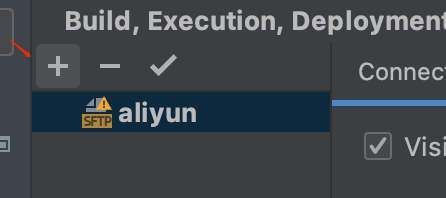
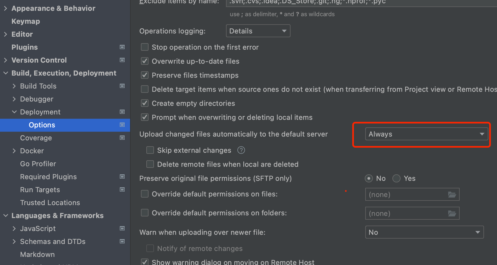
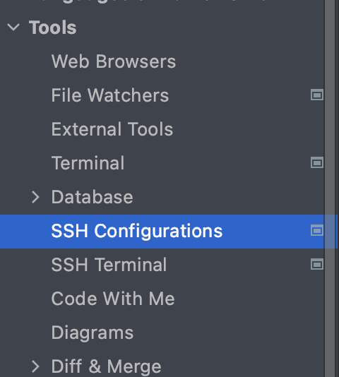

golang开发环境搭建
环境搭建是开发的一部分，砍柴之前磨磨刀还是很必要的。所以，学习之前我打算在linux上搭建一套golang的开发环境；这里以某厂商的云虚拟机为例，操作系统应该是centos7
1. 安装golang
1 | $> wget https://studygolang.com/dl/golang/go1.16.3.linux-amd64.tar.gz -P /data/ # 下载并存放到跟目录的 data文件夹中 |
配环境变量
1 | $> vim ~/.profile |
1 | export GOPATH=/opt/go |
1 | mkdir /opt/go |
2. 配置goland连接orgin
goland是jetbrains公司开发的IDE，开发go程序体验不错，这里以goland为例，配置一个连接origin的环境
1 | preferences -> Build,Execution,Deployment->Deployment |
点左上角 + 并选择SFTP类型

在connection tabs上添加虚拟机地址
在mappings分别填上本地的path和远端的path
点击apply ok 即可；

选择always，保持文件更新之后往远程push

在Tools>ssh configuration配置origin机器信息，这样就可以在IDE的tool工具栏中开启origin的命令行并愉快的使用了；
3. 安装protobuf和grpc
1 | $> wget https://github.com/protocolbuffers/protobuf/releases/download/v3.13.0/protobuf-all-3.13.0.tar.gz -P /data/ # 将文件下载至data文件夹中 |
配置环境变量
1 | $> vim ~/.profile |
1 | source ~/.profile |
安装go语言插件，因为protobuf并没有直接支持go语言，需要手动安装一下相关插件
1 | $> go get -v -u github.com/golang/protobuf/proto |
测试编译是否成功
1 | protoc --go_out=./ *.proto # 在远程执行编译 |
安装grpc
1 | go get -u -v google.golang.org/grpc |
4. 安装微服务相关工具
4.1 安装consul
1 | $ wget https://releases.hashicorp.com/consul/1.5.2/consul_1.5.2_linux_amd64.zip |
4.2 consul测试
1 | consul agent -server -bootstrap-expect 1 -data-dir /tmp/consul -node=n1 -bind=0.0.0.0 -ui -rejoin -config-dir=/etc/consul.d/ -client 0.0.0.0 |
4.3 consul和grpc结合使用
1 | $> go get -u -v github.com/hashicorp/consul |
4.4 go-micro安装
1 | #安装go-micro |